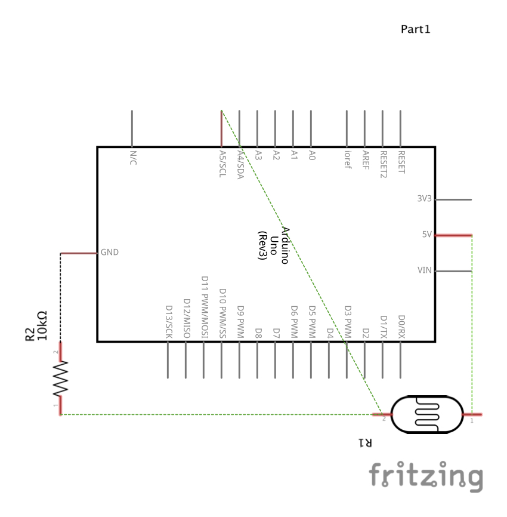
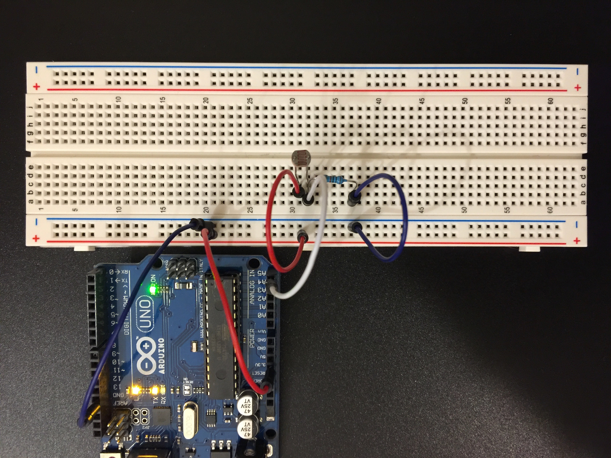

Steven Yong's Assignment 6!
Schematic
Not much to justify since I did the calculations in assignment 3, which showed that using a 10K resistor is safe.
Circuit
Circuit was a direct copy and paste from assignment 3, but even simpler.
Firmware
void setup() {
Serial.begin(9600); //Initiate the serial monitor at a rate of 9600 baud.
}
void loop() {
int photoResistor = analogRead(A5); //Create an integer variable called photoResistor and assign it to read the analog input from pin A5.
Serial.println(photoResistor); //Print the value from pin A5 and then start a new line in the serial monitor.
delay(50); //Delay by 50 milliseconds.
}
var serial; // variable to hold an instance of the serialport library
var portName = '/dev/cu.usbmodem14201' //rename to the name of your port
var datain; //some data coming in over serial!
var xPos = 0;
function setup() {
serial = new p5.SerialPort(); // make a new instance of the serialport library
serial.on('list', printList); // set a callback function for the serialport list event
serial.on('connected', serverConnected); // callback for connecting to the server
serial.on('open', portOpen); // callback for the port opening
serial.on('data', serialEvent); // callback for when new data arrives
serial.on('error', serialError); // callback for errors
serial.on('close', portClose); // callback for the port closing
serial.list(); // list the serial ports
serial.open(portName); // open a serial port
createCanvas(1200, 800);
background(0x08, 0x16, 0x40);
}
// get the list of ports:
function printList(portList) {
// portList is an array of serial port names
for (var i = 0; i < portList.length; i++) {
// Display the list the console:
print(i + " " + portList[i]);
}
}
function serverConnected() {
print('connected to server.');
}
function portOpen() {
print('the serial port opened.')
}
function serialError(err) {
print('Something went wrong with the serial port. ' + err);
}
function portClose() {
print('The serial port closed.');
}
function serialEvent() {
if (serial.available()) {
datain = Number(serial.readLine());
//console.log(datain);
}
}
function graphData(newData) {
// map the range of the input to the window height:
var yPos = map(newData, 0, 255, 0, height);
// draw the line in a pretty color:
stroke(255, 0, 80);
line(xPos, height, xPos, height - yPos);
// at the edge of the screen, go back to the beginning:
if (xPos >= width) {
xPos = 0;
// clear the screen by resetting the background:
background(0x08, 0x16, 0x40);
} else {
// increment the horizontal position for the next reading:
xPos++;
}
}
function draw() {
graphData(datain);
//background(0);
//fill(255);
//if (datain == 0) {
//text("button pressed: YES", 30,30);
//} else {
//text("button pressed: NO", 30,30);
//}
}
I just want to first of all apologize for my lack of creativity with this assignment. I had troubles this week with understanding how this all works. I'll attempt to explain what happened. So I attended lecture and I couldn't get the correct values to read in my p5.serialcontrol program, but at least the values were changing when I covered the photoresistor. However, nothing was showing up in Firefox through index.html and there were some error messages in the console (I forgot which ones) but class was over at this point. To make things worse, I couldn't make it to office hours this week because I was scheduled for work during that time. Fast forward to midnight or so as I'm attempting to recreate my setup from class, I decided to try to be cautious and start from scratch with the button. I didn't delete any files at this point, but simply reverted the code back to the button and used the button circuit. You see, this is where I made the critical mistake. Continuing on, my p5.serialcontrol program was displaying "43," "13,"" and "10" repeatedly. Everything was working in the Arduino serial monitor, and I made sure to completely quit the Arduino program and to select the right port, but nothing changed. It was a given at this point that the console in Firefox was also giving me errors, but I didn't care because I simply decided to delete every single file, reboot my computer, and then try again from the beginning. Following Jasper's PDF instructions, I got to downloading the p5.serialcontrol program, launched it, and it was displaying "43," "13,"" and "10" repeatedly again. I deduced that it was the p5.serialcontrol program itself since there was nothing else that could possibly be causing the problem. Two hours or so pass by and I become increasingly agitated, scouring the internet to figure out what I did wrong. I resort to Slack. Everybody is asleep already. I decided to hijack a Facebook Messenger group chat for another class and somebody responded. They were having the exact same issue with the button and couldn't figure it out, but they decided to charge forward and use the potentiometer and everything worked out. I initally was dumbfounded, but at this point I had nothing else to lose and everything to gain so I got to work. I put in a photoresistor and tweaked the code. Again, everything checked out in the Arduino serial monitor but the p5.serialcontrol program was still displaying weird numbers. I forged on and blasted through the rest of the steps outlined by the PDF document that Jasper created. The moment of truth... I opened index.html with Firefox and... It worked. To say that I'm a little frustrated is an understatement. It feels like I was punished for playing it safe and going back all the way to the button to try to troubleshoot what was going on.
Circuit's Operation

Can't say I'm exactly happy. I feel more relieved that I can sleep for a few hours tonight.